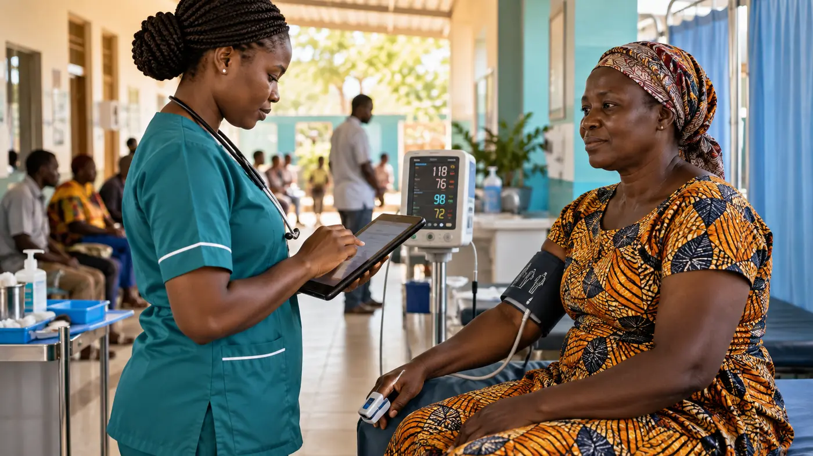
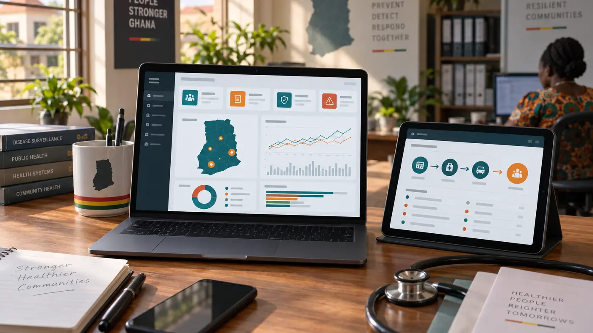
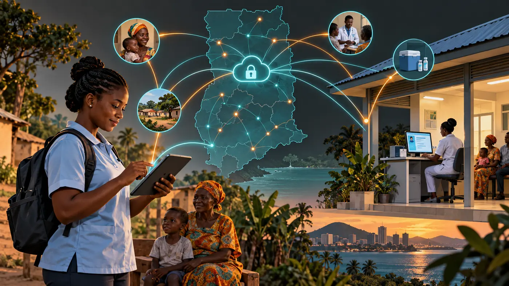

HealthSignal is a Ghana-focused digital health MVP designed to connect structured field screening, hospital care workflows, accountable clinical review, privacy-preserving referrals and aggregate public health intelligence in one secure system.
I created the project after reflecting on a recurring implementation problem: health workers may collect valuable field and facility data, yet the path from an individual encounter to timely follow-up and district-level interpretation can remain fragmented. HealthSignal explores how one system can make that path clearer without pretending that software can replace clinical judgement.
Why this problem matters
Public health surveillance depends on timely, usable information. The World Health Organization describes early warning, alert and response as a way to support earlier detection and rapid response to acute events. WHO’s digital health strategy also emphasizes governance, evidence, interoperability and appropriate use. Technology is valuable only when it strengthens the wider health system.
A practical field platform must serve two connected levels. At the encounter level, a worker needs a clear form, data validation and an appropriate next action. At the programme level, authorized teams need trends, geographic patterns, alert thresholds and follow-up performance. HealthSignal connects these levels in one transparent workflow.

How HealthSignal works
An approved user signs in and sees a workspace determined by their professional role. A field officer or OPD nurse records a non-identifying patient code, location, date, age and sex, followed by vital signs and screening information. The encounter supports blood pressure, temperature, respiratory rate, oxygen saturation, weight, height, automatic body mass index, fasting or random glucose, symptoms, laboratory information, outcome, referral and follow-up.
Condition-specific forms cover hypertension, diabetes, malaria and tuberculosis, with extended modules for maternal risk, childhood malnutrition, anaemia in pregnancy, HIV linkage, diarrhoeal disease and cholera, measles, meningitis, respiratory infection, hepatitis, mental health and other priority noncommunicable diseases.
Role-based access and accountability
Health information cannot be treated like an ordinary public form. HealthSignal separates responsibilities across Administrator, Clinician, Nutritionist or Dietitian, Public Health or Disease Control, Field Officer or OPD Nurse, and Data Officer accounts. New users request access and an administrator must verify and approve them. Permissions determine which modules and workspaces each role can use.
The backend uses authenticated requests and PostgreSQL tables for users, patients, encounters, screenings, tests, referrals and review history. Normal record management archives entries instead of permanently deleting them, supporting accountability and an audit trail.
Expanding from surveillance into connected hospital care
Feedback from health professionals highlighted that screening and surveillance are only part of the patient journey. HealthSignal now includes a stakeholder demonstration called Care Network. It connects records and registration, OPD triage, consulting rooms, laboratory services, pharmacy workflows, RCH, theatre and referral coordination around a facility-based care episode.
A patient can be registered with an existing HealthSignal code or receive a generated code. OPD staff record vital signs and send the patient to the next service point. Clinicians document an assessment and care plan, request laboratory work, issue prescriptions and determine whether care is completed locally or requires referral. Department queues provide a simple operational view of where patients are waiting.
Workplace access control
Role-based permission does not answer every access concern. An authorized staff member might still attempt to use a clinical system away from an approved workplace. For the Care Network demonstration, an administrator can register a facility coordinate and permitted radius. When the control is enabled, a user must allow the device to verify that it is within the approved facility area before Care Network opens.
Successful verification creates a short, server-controlled access grant. Approved and denied attempts are recorded in the security audit. Other permitted HealthSignal workspaces remain available according to the user’s role. This geofence is one protective layer rather than proof of identity: a production system would also need multi-factor authentication, managed devices, network controls, working-time policies, monitoring and formal incident response.
Secure referrals without exposing a hospital’s complete database
Continuity of care creates a difficult but important question: how can Hospital B receive useful clinical information without gaining unrestricted access to Hospital A’s records? HealthSignal now demonstrates a patient-authorized referral exchange. Hospital A remains the custodian of its complete local record. It creates a separate, limited handover package for a named receiving facility and department.
The referring professional selects the information authorized for disclosure: basic demographics, clinical summary, allergies, latest vital signs, relevant laboratory results and current medicines. The authorization source is recorded as patient consent, an authorized representative or an approved lawful basis. The referral expires after 24 hours, 72 hours or seven days.
Data officers and field officers cannot open inter-facility clinical handovers. The referring facility can record withdrawal of consent, which blocks further standard access and revokes referral access grants. The receiving facility can update acceptance, arrival, care and completion status, returning an outcome summary to support continuity rather than leaving the referral pathway open-ended.
Controlled emergency access
If a genuine emergency occurs and the normal referral code is unavailable, an administrator or clinician may request emergency access. The user must confirm the emergency and enter a detailed clinical justification. The demonstration releases only a minimum set of demographics, care summary and allergies, creates a short session and records an emergency audit event for review. It does not silently bypass privacy controls.
This design also addresses confidentiality inside the same hospital. Being employed by a facility should not make every record visible. The long-term model combines professional role, assigned care relationship, department, purpose, patient authorization, data sensitivity, time and location. A pharmacy user, for example, should receive only the information necessary to dispense an active prescription rather than unrestricted consultation notes.

Screening priority, not automated diagnosis
The decision-support logic is deliberately conservative. A maternal risk assessment, for example, can collect gestational age, gravida and parity, antenatal attendance, maternal age, blood pressure, haemoglobin, malaria test, HIV and syphilis testing status, previous caesarean section, multiple pregnancy, fetal movement, warning signs and referral urgency. Its output is limited to Routine, Needs Assessment, High Priority or Immediate Referral.
This distinction is essential. A screening rule may help organize attention, but it does not establish a diagnosis. WHO guidance on ethics and governance of artificial intelligence for health stresses human autonomy, transparency, accountability, safety, equity and sustainability. HealthSignal follows this direction by keeping recommendations explainable, recording rule versions and directing serious or uncertain situations to qualified human review.
Public health surveillance and planning
Authorized public health users can examine aggregate information by district, community, week, age, sex, disease module and case status. The MVP includes suspected, tested and confirmed counts, test positivity, referral completion, weekly trends, community hotspot views, alert thresholds and downloadable district reports.
The planning forecast is framed as a signal rather than a promise. Future responsible models could estimate expected case ranges for one to four weeks, detect unusual increases, identify communities requiring investigation and support medicine or test-kit planning. A production model should always display uncertainty, contributing indicators, model version, training date and a recommended public health response.
Benefits of the approach
- Continuity: previous encounters and follow-up remain linked to a generated patient code.
- Privacy-preserving exchange: another facility receives a limited referral package rather than unrestricted access to the originating hospital’s records.
- Patient agency: the disclosure scope, authorization source and expiry are recorded, and consent can be withdrawn.
- Operational visibility: facility teams can demonstrate queues across records, OPD, consultation, laboratory, pharmacy and referral coordination.
- Timeliness: referral and review queues make pending actions visible.
- Data quality: structured fields and validation reduce avoidable omissions.
- Coordination: each professional role sees tools aligned with its responsibilities.
- Interpretability: priorities show understandable contributing indicators.
- Field readiness: responsive screens, a progressive web app foundation, offline queueing and synchronization support constrained settings.
What the MVP does not yet prove
A working application is not the same as a validated health intervention or an approved hospital information system. Thresholds must be compared with approved Ghana Health Service protocols and reviewed by clinicians, epidemiologists, nutrition specialists, disease-control officers, health-information experts and intended users. Referral consent, lawful-basis handling, patient matching, sensitive-data segmentation, emergency access and staff sanctions require legal and governance review. Usability must be tested in real workflows. Privacy and security controls require formal assessment. Predictive performance cannot be claimed until representative data, a defined outcome and an appropriate evaluation design exist.
Digital health implementation research shows that success depends on workflow fit, workforce capacity, infrastructure, governance, interoperability and trust. HealthSignal therefore needs evaluation as a socio-technical system, not only as code.
Way forward
- Conduct structured expert review of fields, thresholds, recommendations and referral pathways.
- Align terminology and indicators with approved national guidance.
- Run usability sessions with every user role.
- Complete privacy impact, security and threat-model reviews.
- Define facility data custodianship, patient consent and emergency-access policies with Ghanaian legal, clinical and data-protection specialists.
- Introduce staff department assignments, care-team relationships, multi-factor authentication and managed-device controls.
- Map referral messages to appropriate interoperability standards such as HL7 FHIR while keeping each facility responsible for its detailed records.
- Design a controlled pilot with clear success measures and governed data.
- Evaluate completeness, agreement with expert review, referral timeliness, false alerts, missed alerts and workload.
- Explore authorized interoperability with existing health information systems instead of duplicate reporting.

An invitation to review and contribute
I am sharing HealthSignal publicly because strong digital health systems are built through multidisciplinary scrutiny. I welcome feedback from medical officers, nurses, midwives, nutritionists, epidemiologists, disease-control teams, health-information officers, data scientists, software engineers, cybersecurity specialists, implementation researchers and digital-health policy experts.
Useful contributions include reviewing fields and thresholds, identifying missing workflows, proposing evaluation indicators, testing accessibility, strengthening privacy and security, reviewing the database and API, and helping design an ethical pilot.
Evidence and further reading
- WHO Global Strategy on Digital Health 2020–2025 on governance, national strategy and responsible digital transformation.
- WHO Early Warning, Alert and Response operational guidance.
- WHO Ethics and Governance of Artificial Intelligence for Health .
- WHO SMART Guidelines for translating recommendations into digital systems.
- WHO EWARS implementation paper in PubMed Central .
- Google Scholar evidence search on digital health surveillance in sub-Saharan Africa.
- Ghana Data Protection Act, 2012 (Act 843) establishing the national framework for protecting privacy and regulating personal-data processing.
- Ghana Health Service Patients’ Charter covering privacy and confidentiality of information obtained about patients.
- HL7 FHIR Security and Privacy Module describing consent, access control, audit logging and provenance building blocks for health-information exchange.
- HL7 FHIR AuditEvent for recording security, privacy and operational events.
HealthSignal is not presented as a finished answer. It is a working foundation designed to be tested, challenged and improved by the people responsible for safe public health action.← Back to all insights